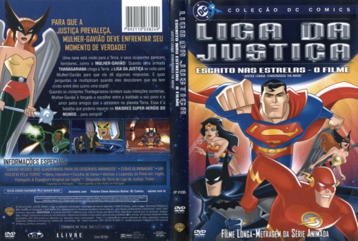
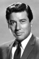

Outro Título:Justice League: Starcrossed - The Movie
País:United States, 66 minutos
Idiomas falados:Espanhol, Inglês, Português
Gênero(s):Animação, Aventura, Família, Fantasia, Mistério
Diretor(s):Butch Lukic, Dan Riba
Escritor(es):Rich Fogel, John Ridley, Dwayne McDuffie
Codec:MPEG-2 (DVD)
Número: 5790


Certificado:
Sinopse:
A Mulher Gavião enfrenta um de seus mais delicados momentos. Uma nave vem para a Terra, e os tripulantes parecem familiares. Quando a armada Thanagariana chega, a Liga da Justiça se volta para Mulher Gavião exigindo algumas respostas, e suas perguntas se multiplicam quando descobrem que ela vive entre eles como uma espiã! Então, os Thanagarianos revelam as suas intenções sombrias e Mulher Gavião é forçada a escolher entre a lealdade a seu povo e o amor por aqueles que a acolheram no planeta Terra. Esta escolha pode determinar o destino dos super-heróis para sempre.
Elenco: 


Tipo de mídia: DVD5,
Legendas: Espanhol, Inglês, Português, Sem Legendas
Alugado: Não
Tela: Anamorphic Widescreen